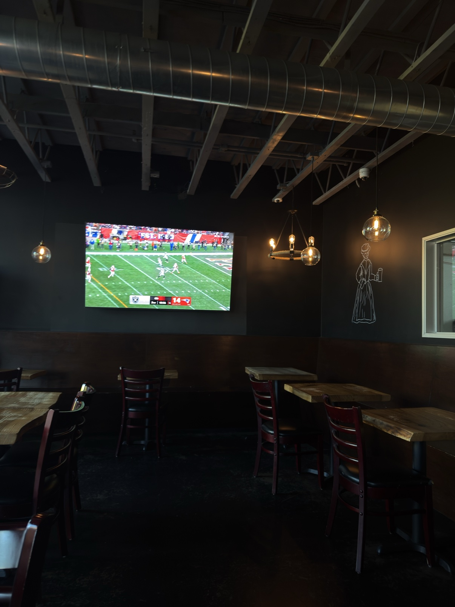
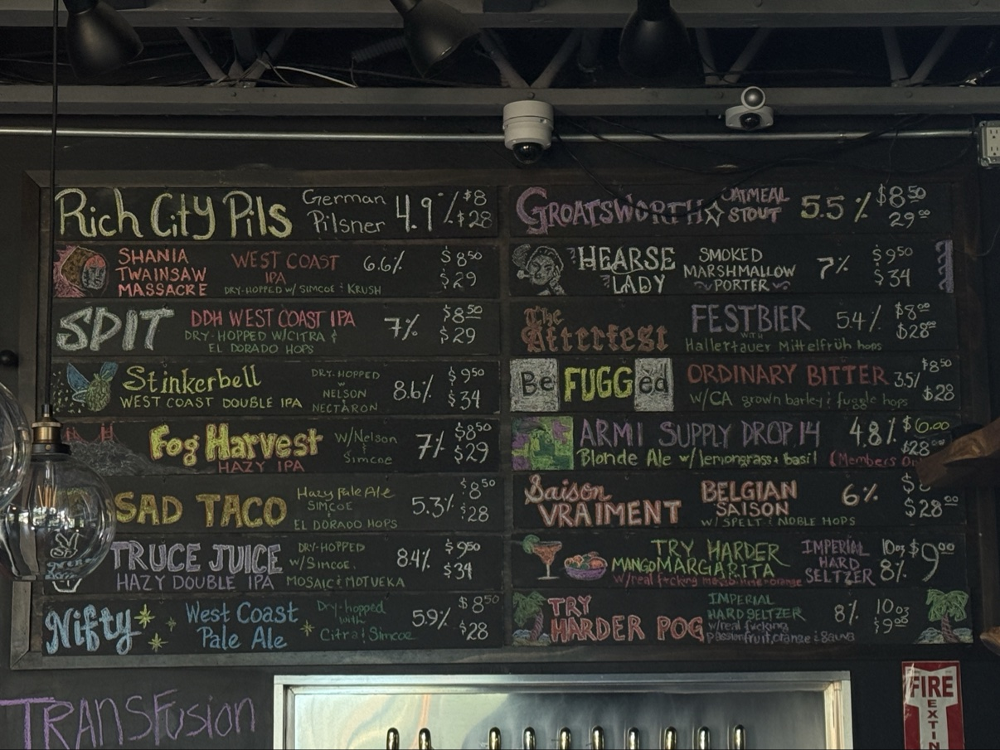
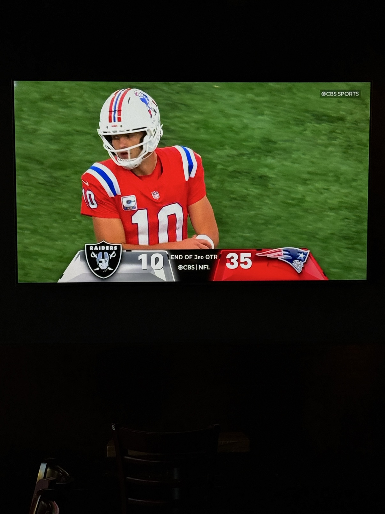
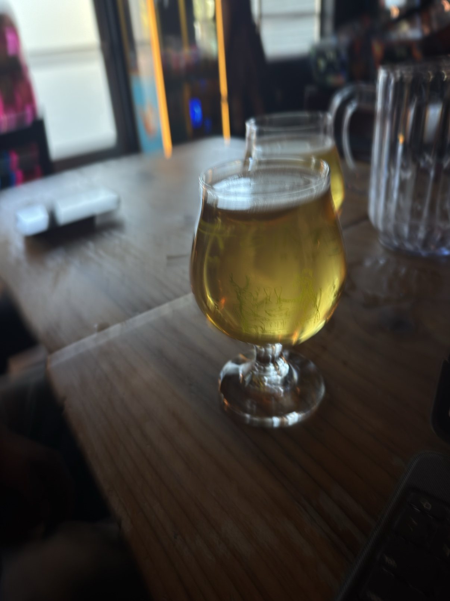

Two Teams, One GOAT: The Ideal Game to Have Returned To

Sitting at my local brewery, having a glass of NA Beer, this brewery’s ambiance is a bit speakeasy, has the coil hanging lights and misplaced chandeliers, still it has always had a welcoming vibe.

Finally catching up with the NFL. My first game this season, after other engagements. Perfect game to come back to, seeing it’s my New England Patriots vs. the Las Vegas Raiders. A team that has had history with my GOAT Tom Brady, and a team now owned partially by him in his retired years. Before you judge me for siding with the Patriots, I have core memories with them before Tom. My childhood friend and I would watch the games together and everything I learned about football was formulated around this time. We saw Joe play for 2 years before this San Mateo kid took over. But when he did take over, Brady came out man he killed it and being from the Bay area myself. You can’t blame me for rooting for my fellow local.
My friend sitting here with me at this moment is a Raiders fan and he summarized the funniest real life situation when it comes to these two teams. There will always be a rivalry since the 2001 tuck rule, which involved Tom Brady and Charles Woodson. And now Brady is part owner of the team. This just rang funny to me and although I know this I hadn’t put it into mind.
First Half
Here’s how the scoring went. Patriots struck first: Maye hit a wide open Pop Douglas for a 35-yard touchdown. 7-0 just like that. Raiders answered right back, Cousins to Brock Bowers for 13 yards to tie it 7-7. Then New England went on a real drive, 11 plays, 84 yards, two fourth-down conversions, and Stevenson punched it in from five yards out. 14-7.
The second quarter got costly. The Patriots lost Henderson to an ankle injury and left tackle Will Campbell on the same drive. Kiner came in for Henderson and fumbled on his very first carry, the Raiders recovered it in great field position, and they still came away with nothing. Gay doinked a 49-yarder off the upright, his first miss of the season. Then right before the half, Hunter Henry came to life: a 26-yard screen, then an 11-yard touchdown on the very next play. Patriots up 21-7 at the half.
We went into halftime up 21-7, and the way they are playing is phenomenal. They did a play at 12:23 that was nasty, Maye did a pass back. Poor Raiders didn’t even see it happen. But I digress, we are all on the same team now. A Raider win is a win for Brady and a win for him is a win for me.
The way Kirk Cousins is playing, it seems Fernando Mendoza will be sitting on the bench this game. I guess we shall see if they try to switch it up so we can see different results. I’m very hopeful for Mendoza he just needs further development from his camp. Apparently it’s the Raiders vs referees according to my friend. And he was not happy about that fumble sequence. His Raiders recovered it at our 38 and still came away with nothing, Gay doinked the field goal right off the upright. And let’s not forget the touchdown by No. 85, the tight end. That made it a 21-7 game, and it seems the Raiders are asleep.
Second Half

Second half, the Patriots never let up. Maye hit Kyle Williams for a 34-yard touchdown on the opening drive. 28-7. Gay got the Raiders on the board with a 46-yard field goal, 28-10, but Maye answered by running one in himself from 3 yards out. 35-10. The Raiders’ best chance to get back in it died when Bowers fumbled and Woodson recovered it. Borregales added a 28-yard field goal. 38-10. Laube ran in his first career touchdown for Vegas, 38-17, and Maye shut the door, hitting Douglas for 8 yards and his second touchdown of the day. 45-17. Mendoza got his debut drive late and got stopped on downs, and Maye kneeled it out. Final score, Patriots 45, Raiders 17. Maye finished 26 of 34 for 374 yards, four passing touchdowns, and one rushing touchdown.
The Patriots scored at 12:58 to start the third quarter, making it 28-7. Yikes!

After having had one more NA Beer and watching the frustration of the Raider fan beside me for three quarters, I decided this was the ideal game to have returned to.
Loading comments…